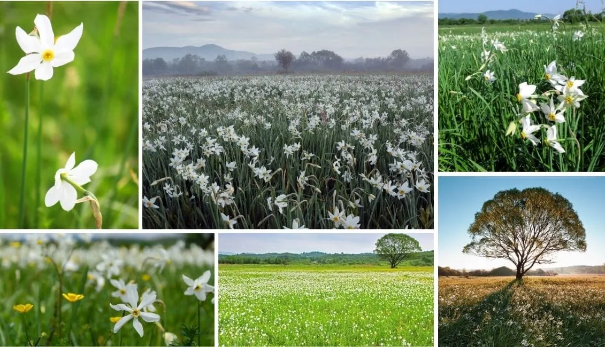

Популярні та маловідомі цікаві факти про Україну
Станція “Арсенальна” Київського метрополітену (Святошинсько-Броварська лінія) сьогодні є найглибшою станцією метро у світі. Її глибина становить 105,5 м. Вам доведеться їхати довгих п’ять хвилин на ескалаторі, щоб дістатися до станції.
Борщ як нематеріальна спадщина – 1 липня 2022 року ЮНЕСКО внесла борщ до Списку нематеріальної культурної спадщини, яка потребує охорони.
Запорізька Січ — одна з перших демократичних систем у світі. Заснована в середині 16 століття, сьогодні ця організація визнана однією з перших демократій у світі.
“Марічка у Чернівцях”. Понад чотирнадцять років поспіль у Чернівцях щодня рівно о 12:00 на балкон міської ратуші виходив трубач у національному вбранні, щоб виконати мелодію “Марічка”.
ВгоруПриродні цікаві факти про Україну
Україна є найбільшою за площею країною в Європі. Загальна площа України становить 603,55 кв. км.
Україну часто називають “житницею Європи”, оскільки вона має ідеальні умови для вирощування пшениці і є великим виробником зерна.
Україна є лідером у Європі та другою у світі за запасами марганцевих руд (2,28 мільярда тонн), поступаючись лише Південно-Африканській Республіці.
В Україні, неподалік міста Хуст в Закарпатській області, розташована Долина нарцисів — захоплююче і красиве місце, яке є великим природним заповідником, повністю вкритим цими квітами. Цей заповідний масив, розміщений в урочищі Кіреші, знаходиться за 4 км на схід від Хуста і перебуває під охороною ЮНЕСКО
Гора Говерла — найвища гора в Україні. Її висота 2061 м. Гора Говерла є частиною Карпатських гір. З кінця 19-го століття ця гора є визначною туристичною пам’яткою. З роками гора набула популярності і як місце для екстремальних видів спорту.
ВгоруІсторичні цікаві факти про Україну
Перша у світі конституція була розроблена і введена в дію в 1710 році українським гетьманом Пилипом Орликом. Документ мав на меті запровадити поділ влади. У ньому були окреслені обов’язки та права як громадян, так і уряду.
Національна бібліотека України імені В. І. Вернадського — скарбниця знань. Це одна з найбільших національних бібліотек світу. Вона налічує понад 30 мільйонів одиниць зберігання і є скарбницею знань, що містить книги, періодичні видання, рукописи, карти та інші документи. Вона також є домом для найбільшої у світі колекції української літератури, яка налічує понад 1,5 мільйона примірників. Бібліотека є популярним місцем як для місцевих жителів, так і для туристів, пропонуючи різноманітні освітні та культурні заходи.
Львів має найбільшу кількість кафе на душу населення. Місто може похвалитися десятками закладів, де готують чудову каву та гарячий шоколад, а також виготовляють різноманітні солодощі на місці..
ВгоруМузичні цікаві факти про Україну
Всесвітньо відома неаполітанська пісня “O Sole Mio” була написана Едуардо Ді Капуа у 1898 році в Одесі. Він перебував у південному порті зі своїм батьком, скрипалем, коли його вразив прекрасний світанок на Чорному морі. Слова до цієї пісні невдовзі написав поет Джованні Капурро.
Найдовший духовий інструмент у світі — українська трембіта. Він занесений до Книги рекордів Гіннеса. Трембіта — це дерев’яна труба, довжина якої коливається від 2,5 до 8 метрів, а діаметр — близько 30 мм. У гірських селах трембіта використовувалася як засіб комунікації, щоб сповіщати про такі події, як початок і закінчення робочого дня, народження дитини, одруження, небезпеку, що насувається тощо.
Вгору